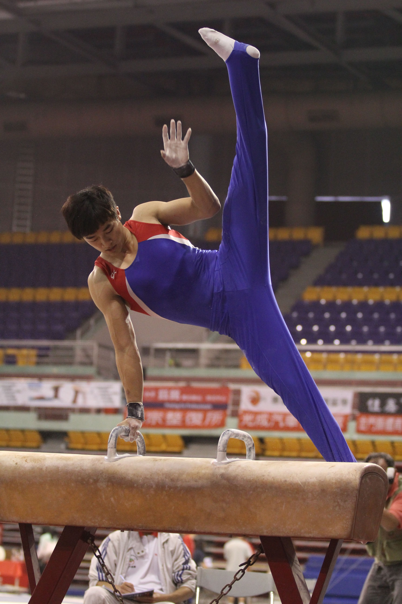

大學報作品
2012 - 2013
創作說明
擔任大學報攝影影音記者期間，採訪報導、拍攝、錄製、編輯之作品。
期間獲得大學報學期最佳新聞照片、學期最佳影音新聞兩項殊榮，並以另一支新聞影片獲公視Peopo新聞公民新聞播出。
創作工具
Adobe Lightroom, EDIUS

大學報學期最佳新聞照片(2013)
台灣師範大學體操隊選手凃育辰傷後復出首戰即獲個人全能季軍。
101年全國田徑錦標賽
奧運選手陳傑(當時就讀台灣體育運動大學)在400公尺及400公尺跨欄摘雙金，跨欄以50秒23破大會紀錄。

攝影專題-極限運動
BMX好手游家毓
「群音崛起」全國大專院校熱門音樂大賽
參賽隊伍蘭花刀
大學報學期最佳影音新聞(2013)
第十二屆牯嶺街書香創意市集『兩日書店「獨」書概念展』
公視Peopo公民新聞播出(2012)
2012/9/28高等教育工會要求暫停並檢討評鑑制度陳情抗議報導
2013非洲嘉年華會採訪報導
攝影專題-極限運動
極限直排輪好手黃明嵩

2012台中市調酒大賽
花式調酒第一名馮景鴻
「群音崛起」全國大專院校熱門音樂大賽
冠軍Polaris北極星樂團